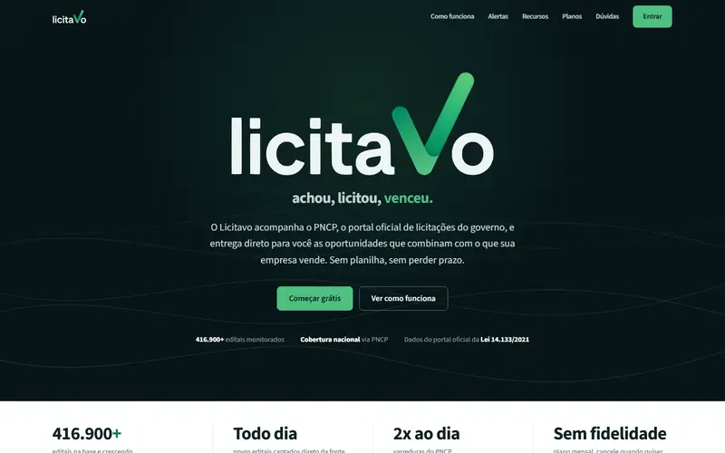

Licitavo
produto próprio · pré-lançamento
SaaS que encontra licitações públicas e diz se vale a pena entrar.
Plataforma pra ME/EPP e consultores monitorarem licitações do Brasil inteiro a partir do PNCP, com mais de 400 mil editais na base. Cada edital ganha um selo “Vale entrar” ou “Provavelmente não”, com score e fatores explicáveis (aderência ao perfil, prazo, valor, benefício ME/EPP, concorrência), calculado em regras determinísticas; a IA só escreve o resumo e o produto funciona inteiro sem ela. Inclui inteligência competitiva: perfil de compras do órgão, concorrentes, série histórica e banco de preços homologados.
stack:Next.js · FastAPI · Supabase (Postgres + Auth) · Docker · VPS · Claude API
- pré-lançamento
- em parceria
- go/no-go explicável